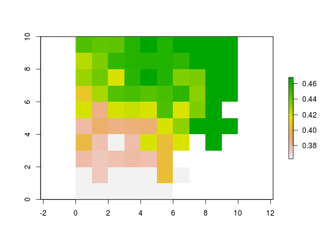

This function takes a rasterstack of pathdistances and generates surfaces by weighting parameter values by these distances
ipdwInterp(spdf, rstack, paramlist, overlapped = FALSE, yearmon = "default", removefile = TRUE)
RasterLayer
spdf <- data.frame(rnorm(2)) xy <- data.frame(x = c(4, 2), y = c(8, 4)) coordinates(spdf) <- xy m <- matrix(NA, 10, 10) costras <- raster(m, xmn = 0, xmx = ncol(m), ymn = 0, ymx = nrow(m)) #introduce spatial gradient costras[] <- runif(ncell(costras), min = 1, max = 10) for(i in 1:nrow(costras)){ costras[i,] <- costras[i,] + i costras[,i] <- costras[,i] + i } rstack <- pathdistGen(spdf, costras, 100)#> | | | 0% | |=================================== | 50% | |======================================================================| 100% #>final.raster <- ipdwInterp(spdf, rstack, paramlist = c("rnorm.2."), overlapped = TRUE) plot(final.raster)